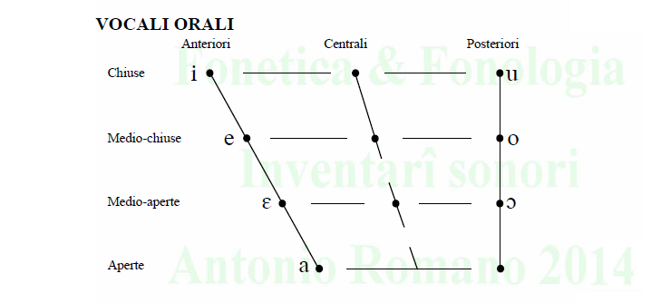
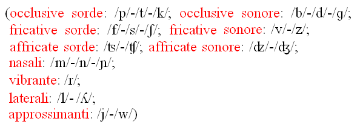
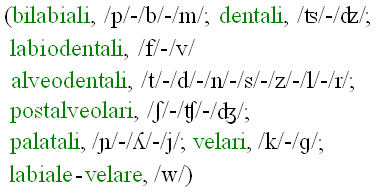
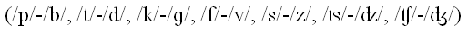
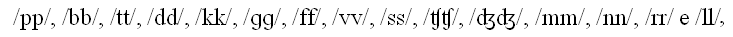
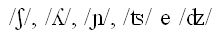

Phone it!
"Phone it!" è un sito per l'apprendimento della pronuncia dell'italiano per stranieri.
[In costruzione]
Cominciamo da alcuni concetti fondamentali.
Vocalismo
L'italiano ha un sistema vocalico relativamente semplice.
Soltanto 7 timbri vocalici sono distintivi in posizione accentata (accento lessicale).
Si hanno:
- 'i' ad es. in "vinti";
- 'é' come ad es. in "vénti (20)";
- 'è' come ad es. in "vènti (pl. di vènto)";
- 'a' come ad es. in "vanti (< vantare)";
- 'ò' come ad es. in "còlto (raccolto)";
- 'ó' come ad es. in "cólto (erudito)".
- 'u' ad es. in "culto (religioso)";
I timbri di questi 7 suoni sono disposti nel trapezio vocalico nel modo seguente:

Consonantismo
I suoni consonantici con distribuzione più ampia sono 23, organizzati in
serie

oppure in
ordini

oppure ancora in
coppie sordo-sonoro
.
Si hanno ad es.:
le occlusive:
- 'p' in "pane" e "apra";
- 'b' in "bambino" e "bravo";
- 't' in "tanto" e "treno";
- 'd' in "dono" e "banda";
- 'c (velare)' in "cane" e "panca";
- 'g (velare)' in "gas" e "fango";
- le fricative:
- 'f' in "fare" e "tonfo";
- 'v' in "vaso" e "inverno";
- 's (sorda)' in "sale", "rósa (corrosa)" e "casa (pronuncia trad.)";
- 's (sonora)' in "sbaglio", "ròsa (fiore)" e "casa (pronuncia sett.)";
- 'sc(i) (postalveolare)' in "sciame" e "scegliere";
- le affricate:
- 'z (sorda)' in "azione" e "zucchero (pronuncia trad.)";
- 'z (sonora)' in "azienda" e "zaino";
- 'c(i) (postalveolare)' in "cielo" e "cena";
- 'g(i) (postalveolare)' in "giorno" e "genere";
- le nasali:
- 'm' in "mio" e "gamba";
- 'n' in "nono" e "canto";
- 'gn' in "gnocchi" e "stagno";
- la vibrante:
- 'r (monovibrante)' in "coro" e 'r (tend. polivibrante)' in "rana" e "arte";
- le laterali:
- 'l' in "lascio" e "pala";
- 'gl(i) (palatale)' in "gli" e "aglio";
- le approssimanti:
- 'i' in "piede" e "noioso";
- 'u' in "uomo" e "guerra".
È inoltre significativa la serie di opposizioni che si stabiliscono a causa di una
geminazione distintiva che interessa 15 consonanti (delle 23 fonologiche).
Si hanno le seguenti geminate:

le cui rese fonetiche si caratterizzano per una maggiore lunghezza (le occlusive soltanto nella loro fase di tenuta).
Esempi di opposizioni distintive sono rispettivamente offerti dalle seguenti coppie:
- "rupi" ~ "ruppi" (o "capi" ~ "cappi"), "libra" ~ "libbra", "dita" ~ "ditta" (o "fato" ~ "fatto"), "cade" ~ "cadde", "ròca" ~ "ròcca", "fuga" ~ "fugga";
- "tufo" ~ "tuffo", "béve" ~ "bévve", "casa" ~ "cassa";
- "luci" ~ "lucci" (o "face" ~ "facce"), "legènda" ~ "leggènda" (o "agio" ~ "aggio");
- "fumo" ~ "fummo", "cane" ~ "canne";
- "caro" ~ "carro", "pala" ~ "palla".
Sono
intrinsecamente lunghe le rese postvocaliche di

(per le quali si hanno gli esempi: "pesci", "spazi" o "pizza", "azzurro", "sogno" e "bottiglia")
mentre sono intrinsecamente brevi quelle di /z/, /w/ e /j/ ("ròsa", "kiwi" e "saio").
Fonotassi
Un ruolo considerevole nella fonotassi dell'italiano hanno la sillaba e i dittonghi.
I dittonghi sono nuclei vocalici costituiti da due timbri.
Si considerano 'falsi' i dittonghi ascendenti [je jE ja JO jo ju] e [wi wE wa wO wo] che sono particolarmente diffusi per ragioni storico-evolutive.
Si ha ad es. [jE] in "ieri" e [wO] in "uovo" con due suoni consonantici [j] e [w] in attacco di sillaba.
I 'veri' dittonghi, discendenti, sono invece [ei Ei ai Oi oi ui] e [(iu) eu Eu au (Ou ou)] (come in "baita" e in "flauto"; tra parentesi i meno frequenti).
I dittonghi sono nuclei vocalici costituiti da due elementi entrambi vocalici
(il primo più stabile e più forte del secondo, il quale è considerato di solito, nella pronuncia più comune, semi-vocalico).
Fonologia lessicale (accento)
... in costruzione...
Fonosintassi
... in costruzione...
Soprasegmentale
... in costruzione...
Alcuni esercizi di pronuncia e trascrizione per apprendenti di italiano L2 sono disponibili al seguente link.